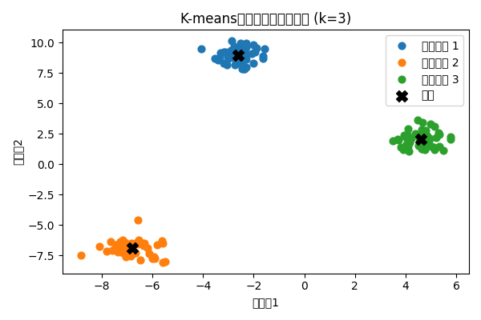

クラスタリングと K-means
クラスタリングは、ラベル付けされていないデータを似たもの同士のグループ（クラスター）に分ける教師なし学習の代表的な手法です。データ構造を理解したり、パターンを発見したりするときに役立ちます。
K-means アルゴリズム
K-means は最も広く利用されているクラスタリングアルゴリズムの一つで、次の手順で進められます【218594228836132†L27-L54】。
- あらかじめ決めたクラスター数 k 個の重心（クラスタ中心）をランダムに初期化する。
- 各データ点を、最も近い重心を持つクラスターに割り当てる。
- 各クラスターのデータ点の平均を計算し、新しい重心とする。
- 重心がほとんど移動しなくなるまで 2–3 を繰り返す。
K-means の用途
- ユーザーや顧客のセグメンテーション
- 画像の色数削減や圧縮
- 異常検知やアウトライアの発見
- 文書やニュース記事のクラスタリング
クラスタリング例
下図は、人工的に生成した 2 次元データを K-means で 3 つに分類した例です。各色が異なるクラスターを表し、黒い「X」が各クラスターの中心を示しています。

K-means は効率的で解釈もしやすい一方、クラスター数 k を事前に決める必要があり、初期値によって結果が変わることがあります。このため、複数の初期化を試行したり、適切な k を選択するためにエルボー法などを用います。